Core Image Operators
Every operator of the basic, arithmetic, transcendental, filtering, morphology, thresholding and segmentation bundles, run on the same inputs. Captions give the call. Images are shown at 2×.
Inputs
g_gallery(page, [("input_cell.png", "`cell` (intensity)", cell), ("input_shifted.png", "`shifted` (cell moved right)", shifted),
("input_mask.png", "`mask` = otsu(cell)", mask), ("input_shifted_mask.png", "`shifted_mask`", shifted_mask)])cell (intensity) | shifted (cell moved right) | mask = otsu(cell) | shifted_mask |
|---|---|---|---|
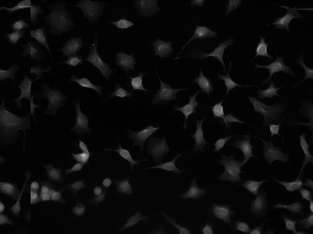 | 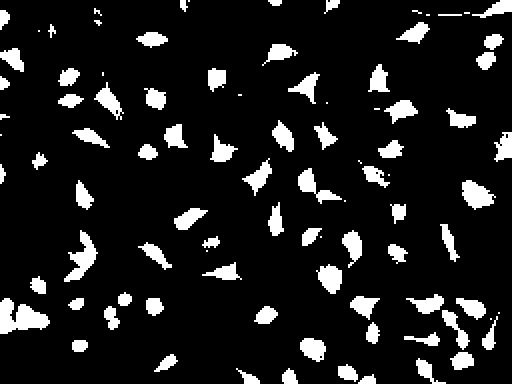 | 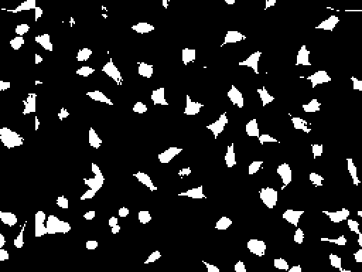 |
Basics and casts
bI, bB, bS = :bundle_image2DIntensity_basic_factory, :bundle_image2DBinary_basic_factory, :bundle_image2DSegment_basic_factory
g_gallery(page, entries("basic", [
(bI, :identity_image2D, I, (cell,), "`identity_image2D(cell)`"),
(bI, :ones_2D, I, (cell,), "`ones_2D(cell)`"),
(bI, :zeros_2D, I, (cell,), "`zeros_2D(cell)`"),
(bI, :experimental_invert_2D, I, (cell,), "`experimental_invert_2D(cell)`: `1 − v`"),
(bI, :experimental_normalize_2D, I, (cell,), "`experimental_normalize_2D(cell)`: min→0, max→1"),
(bI, :experimental_standardize_2D, I, (cell,), "`experimental_standardize_2D(cell)`: `(v − mean)/std`, clamped to [0, 1]"),
(bI, :experimental_tointensity_image2D, I, (mask,), "`experimental_tointensity_image2D(mask)`"),
(bB, :experimental_tobinary_image2D, B, (cell,), "`experimental_tobinary_image2D(cell)`: every pixel > 0"),
(bB, :experimental_tobinary_th_image2D_factory, B, (cell, 0.2), "`experimental_tobinary_th_image2D_factory(cell, 0.2)`: pixels > 0.2"),
(bB, :identity_image2D, B, (mask,), "`identity_image2D(mask)`"),
(bB, :ones_2D, B, (mask,), "`ones_2D(mask)`"),
(bB, :zeros_2D, B, (mask,), "`zeros_2D(mask)`"),
(bS, :identity_image2D, S, (g_segment(Int.(reinterpret(mask.img))),), "`identity_image2D(labels)`"),
(bS, :ones_2D, S, (g_segment(Int.(reinterpret(mask.img))),), "`ones_2D(labels)`: label 1 everywhere"),
(bS, :zeros_2D, S, (g_segment(Int.(reinterpret(mask.img))),), "`zeros_2D(labels)`: background everywhere"),
(bB, :experimental_invert_2D, B, (mask,), "`experimental_invert_2D(mask)`"),
(bS, :experimental_tosegment_image2D, S, (mask,), "`experimental_tosegment_image2D(mask)`: labels 0 and 1 (no splitting into objects)"),
]))identity_image2D(cell) | ones_2D(cell) | zeros_2D(cell) | experimental_invert_2D(cell): 1 − v |
|---|---|---|---|
 | 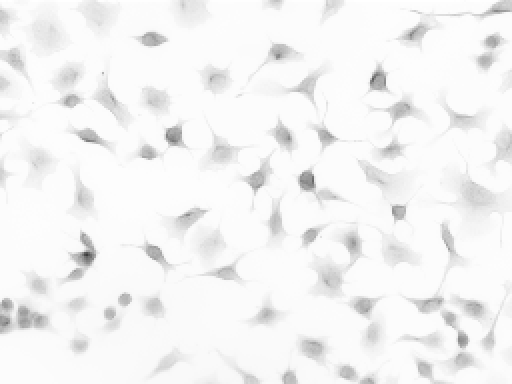 | ||
experimental_normalize_2D(cell): min→0, max→1 | experimental_standardize_2D(cell): (v − mean)/std, clamped to [0, 1] | experimental_tointensity_image2D(mask) | experimental_tobinary_image2D(cell): every pixel > 0 |
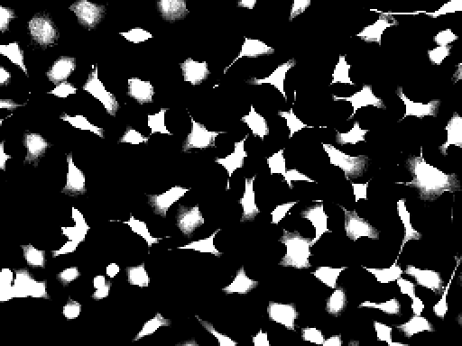 |  | ||
experimental_tobinary_th_image2D_factory(cell, 0.2): pixels > 0.2 | identity_image2D(mask) | ones_2D(mask) | zeros_2D(mask) |
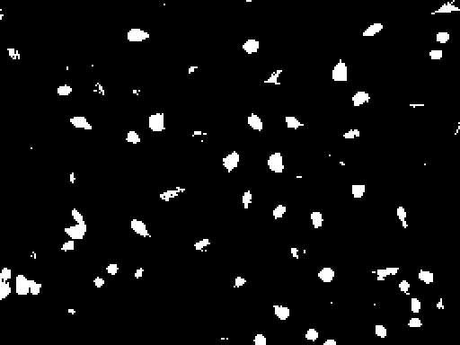 |  |  |  |
identity_image2D(labels) | ones_2D(labels): label 1 everywhere | zeros_2D(labels): background everywhere | experimental_invert_2D(mask) |
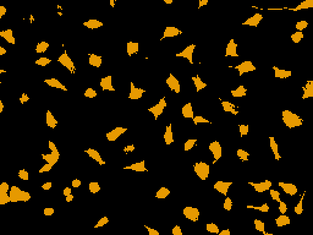 |  | 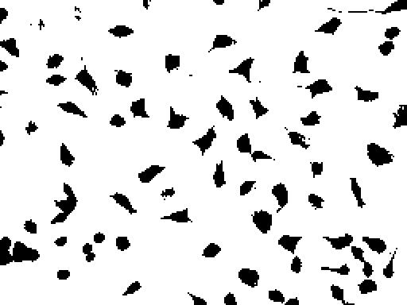 | |
experimental_tosegment_image2D(mask): labels 0 and 1 (no splitting into objects) | |||
 |
Arithmetic between two images
Intensity results are clamped to [0, 1]; on masks, add is or, mult and min are and, max is or, subtract is and not.
aI, aB = :bundle_image2DIntensity_arithmetic_factory, :bundle_image2DBinary_arithmetic_factory
g_gallery(page, entries("arith", vcat(
[(aI, n, I, (cell, shifted), "`$(n)(cell, shifted)`") for n in (:add_img2D, :subtract_img2D, :mult_img2D, :max_img2D, :min_img2D)],
[(aB, n, B, (mask, shifted_mask), "`$(n)(mask, shifted_mask)`") for n in (:add_img2D, :subtract_img2D, :mult_img2D, :max_img2D, :min_img2D)],
)); cols = 5)add_img2D(cell, shifted) | subtract_img2D(cell, shifted) | mult_img2D(cell, shifted) | max_img2D(cell, shifted) | min_img2D(cell, shifted) |
|---|---|---|---|---|
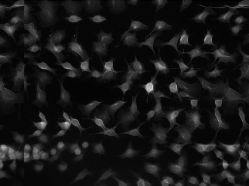 | 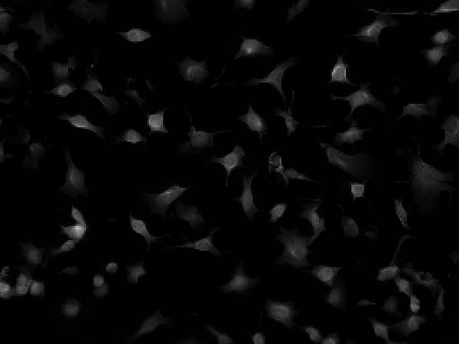 | 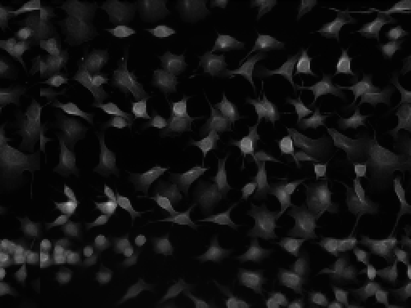 | 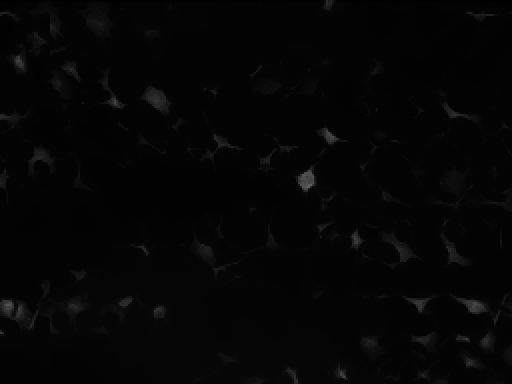 | |
add_img2D(mask, shifted_mask) | subtract_img2D(mask, shifted_mask) | mult_img2D(mask, shifted_mask) | max_img2D(mask, shifted_mask) | min_img2D(mask, shifted_mask) |
 | 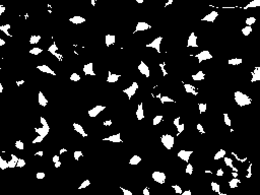 |  | 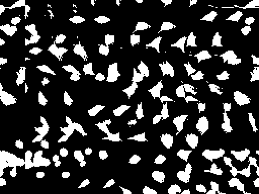 | 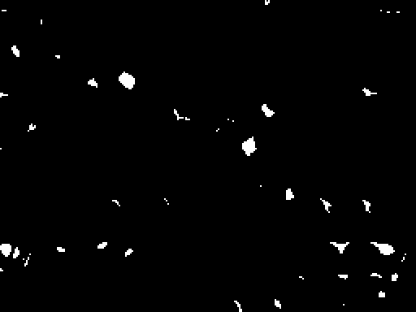 |
Arithmetic with a number, and transcendental maps
sI, tI = :bundle_image2DIntensity_barithmetic_factory, :bundle_image2DIntensity_transcendental_factory
g_gallery(page, entries("scalar", [
(sI, :badd_image2D, I, (cell, 0.3), "`badd_image2D(cell, 0.3)`"),
(sI, :bsubtract_image2D, I, (cell, 0.1), "`bsubtract_image2D(cell, 0.1)`"),
(sI, :bmult_image2D, I, (cell, 3.0), "`bmult_image2D(cell, 3)`"),
(tI, :exp_image2D, I, (cell,), "`exp_image2D(cell)`"),
(tI, :log_image2D, I, (cell,), "`log_image2D(cell)`"),
(tI, :loginv_image2D, I, (cell,), "`loginv_image2D(cell)`"),
(tI, :powerof_image2D, I, (cell, 0.5), "`powerof_image2D(cell, 0.5)`: brightens"),
(tI, :powerof_image2D, I, (cell, 2.0), "`powerof_image2D(cell, 2)`: darkens"),
]))badd_image2D(cell, 0.3) | bsubtract_image2D(cell, 0.1) | bmult_image2D(cell, 3) | exp_image2D(cell) |
|---|---|---|---|
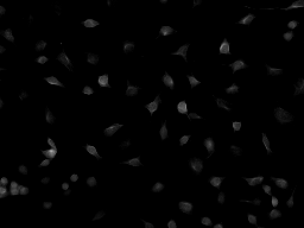 | 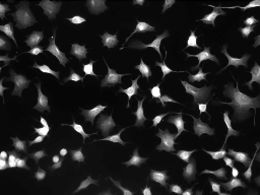 | 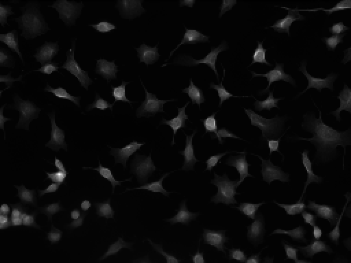 | |
log_image2D(cell) | loginv_image2D(cell) | powerof_image2D(cell, 0.5): brightens | powerof_image2D(cell, 2): darkens |
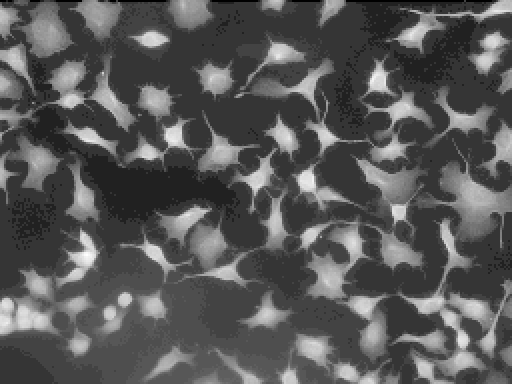 | 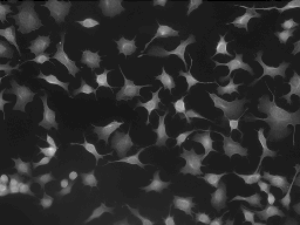 | 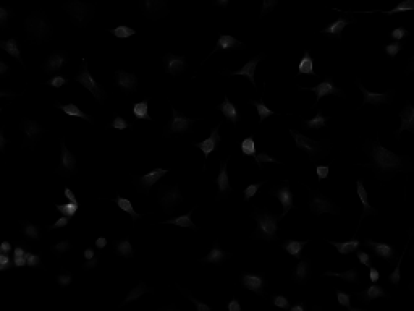 |
Filtering
Filter results are rescaled min to max. The x / y derivatives are signed: edges getting brighter to the right (x) or downwards (y) are dark, the opposite edges bright, flat areas mid-grey. The optional second input of the gradients, Gaussians and Laplacian is the border mode (< 0 wrap, 0 repeat the edge, > 0 mirror), which changes pixels within the kernel radius of the boundary (up to 12 pixels for a 25×25 kernel).
fI = :bundle_image2DIntensity_filtering_factory
plain = [w.name for w in bundle_image2DIntensity_filtering_factory if !(w.name in (:dog_image2D, :moffat5_image2D, :moffat13_image2D, :moffat25_image2D))]
g_gallery(page, entries("filter", vcat(
[(fI, n, I, (cell,), "`$(n)(cell)`") for n in plain],
[(fI, :dog_image2D, I, (cell, 1.0, 1.0), "`dog_image2D(cell, 1, 1)`"),
(fI, :dog_image2D, I, (cell, 3.0, 3.0), "`dog_image2D(cell, 3, 3)`"),
(fI, :moffat5_image2D, I, (cell, 2.0, 1.5), "`moffat5_image2D(cell, 2, 1.5)`"),
(fI, :moffat13_image2D, I, (cell, 3.0, 1.5), "`moffat13_image2D(cell, 3, 1.5)`"),
(fI, :moffat25_image2D, I, (cell, 4.0, 1.5), "`moffat25_image2D(cell, 4, 1.5)`")],
)); cols = 6)sobelx_image2D(cell) | sobely_image2D(cell) | sobelm_image2D(cell) | ando3x_image2D(cell) | ando3y_image2D(cell) | ando3m_image2D(cell) |
|---|---|---|---|---|---|
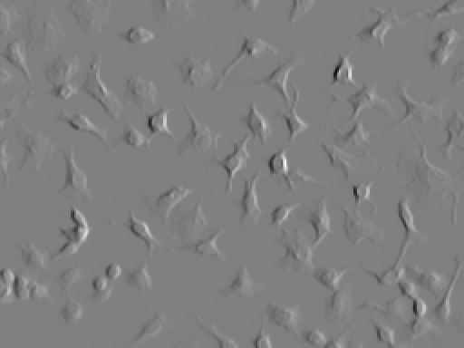 | 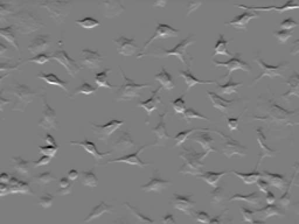 | 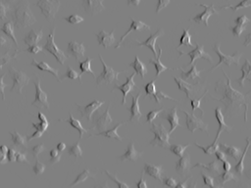 | 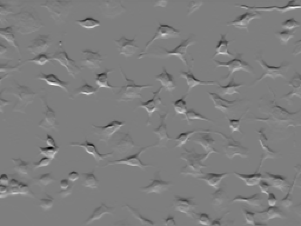 | 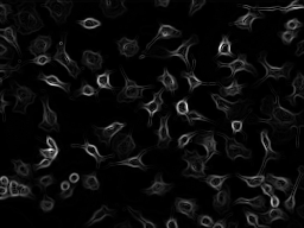 | |
ando4x_image2D(cell) | ando4y_image2D(cell) | ando4m_image2D(cell) | ando5x_image2D(cell) | ando5y_image2D(cell) | ando5m_image2D(cell) |
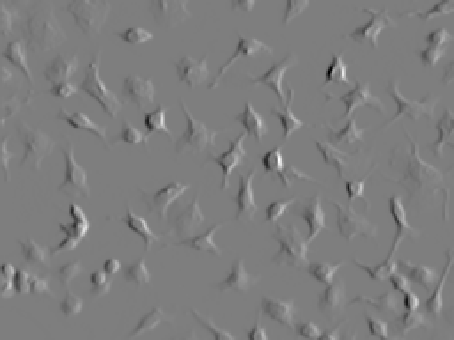 | 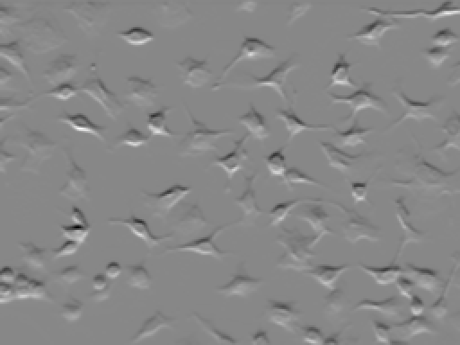 | 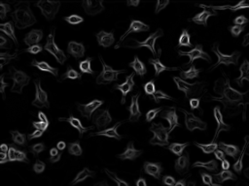 | 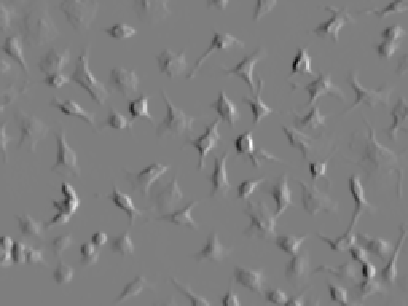 | 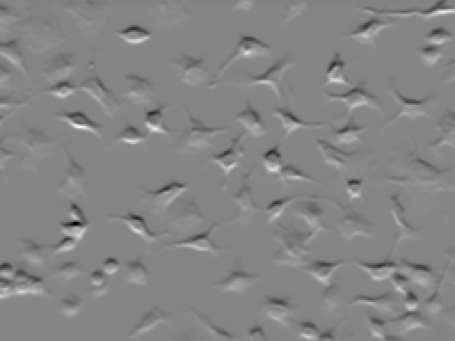 | |
bickleyx_image2D(cell) | bickleyy_image2D(cell) | bickleym_image2D(cell) | prewittx_image2D(cell) | prewitty_image2D(cell) | prewittm_image2D(cell) |
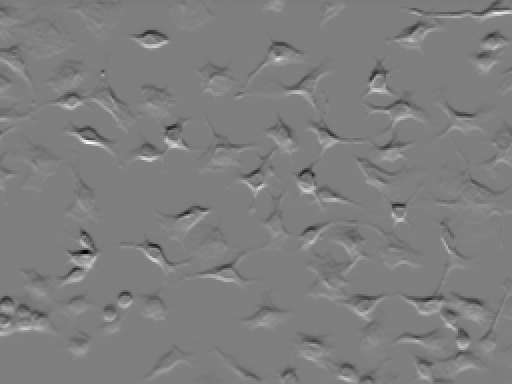 | 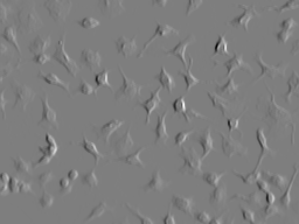 | 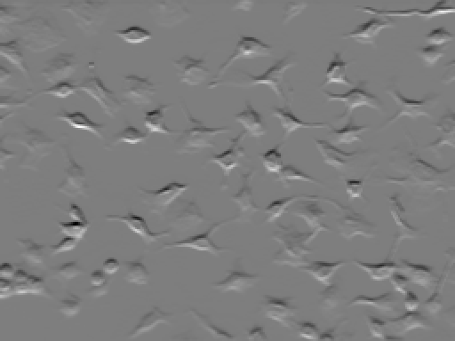 | |||
scharrx_image2D(cell) | scharry_image2D(cell) | scharrm_image2D(cell) | gaussian5_image2D(cell) | gaussian9_image2D(cell) | gaussian13_image2D(cell) |
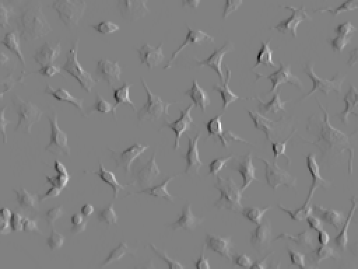 | 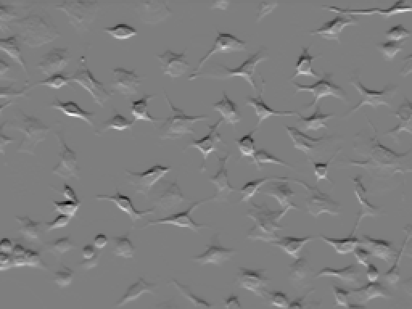 | ||||
gaussian17_image2D(cell) | gaussian25_image2D(cell) | laplacian3_image2D(cell) | dog_image2D(cell, 1, 1) | dog_image2D(cell, 3, 3) | moffat5_image2D(cell, 2, 1.5) |
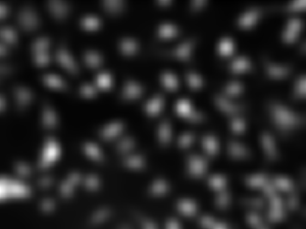 | 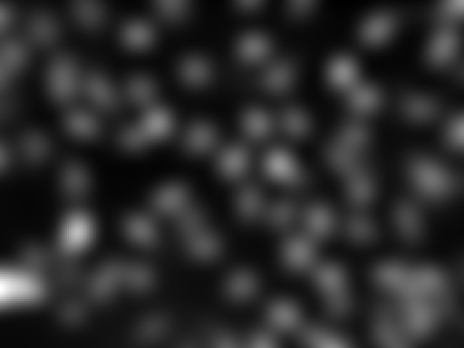 | 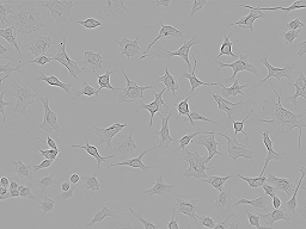 | 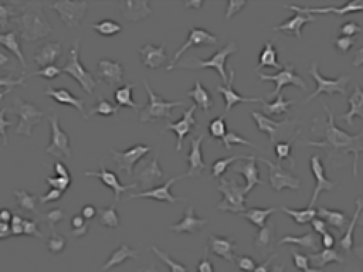 | 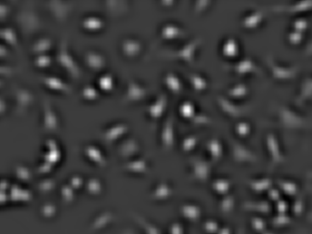 | |
moffat13_image2D(cell, 3, 1.5) | moffat25_image2D(cell, 4, 1.5) | ||||
The binary filtering bundle applies the same filters and rounds the result to a mask (set above 0.5), and adds the local extrema:
fB = :bundle_image2DBinary_filtering_factory
g_gallery(page, entries("bfilter", vcat(
[(fB, n, B, (cell,), "`$(n)(cell)` → mask") for n in plain],
[(fB, :dog_image2D, B, (cell, 1.0, 1.0), "`dog_image2D(cell, 1, 1)` → mask"),
(fB, :moffat5_image2D, B, (cell, 2.0, 1.5), "`moffat5_image2D(cell, 2, 1.5)` → mask"),
(fB, :moffat13_image2D, B, (cell, 3.0, 1.5), "`moffat13_image2D(cell, 3, 1.5)` → mask"),
(fB, :moffat25_image2D, B, (cell, 4.0, 1.5), "`moffat25_image2D(cell, 4, 1.5)` → mask"),
(fB, :findlocalmaxima_image2D, B, (cell, 5.0, 5.0), "`findlocalmaxima_image2D(cell, 5, 5)`"),
(fB, :findlocalminima_image2D, B, (cell, 5.0, 5.0), "`findlocalminima_image2D(cell, 5, 5)`")],
)); cols = 6)sobelx_image2D(cell) → mask | sobely_image2D(cell) → mask | sobelm_image2D(cell) → mask | ando3x_image2D(cell) → mask | ando3y_image2D(cell) → mask | ando3m_image2D(cell) → mask |
|---|---|---|---|---|---|
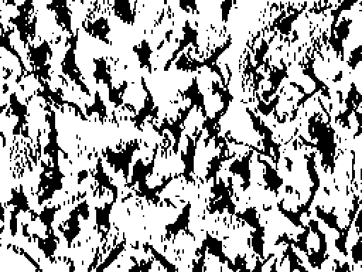 | 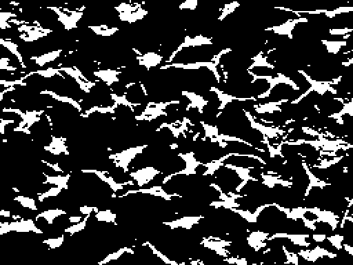 | 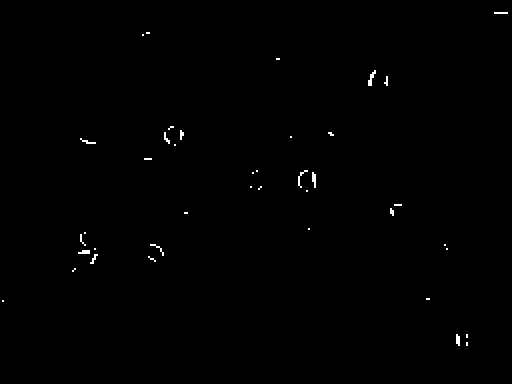 | 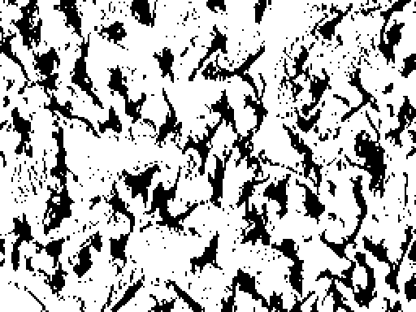 | 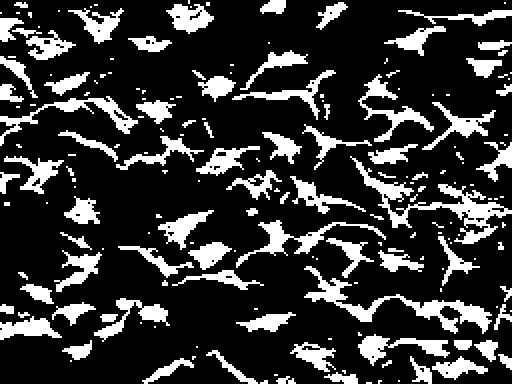 | 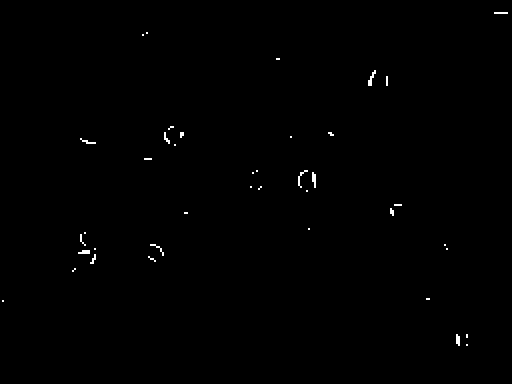 |
ando4x_image2D(cell) → mask | ando4y_image2D(cell) → mask | ando4m_image2D(cell) → mask | ando5x_image2D(cell) → mask | ando5y_image2D(cell) → mask | ando5m_image2D(cell) → mask |
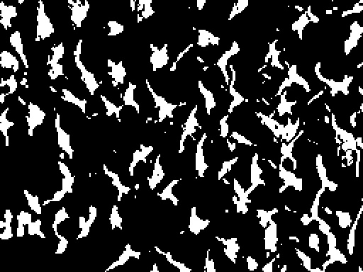 | 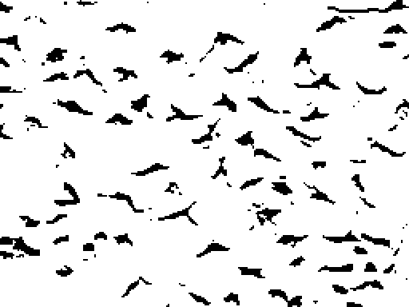 | 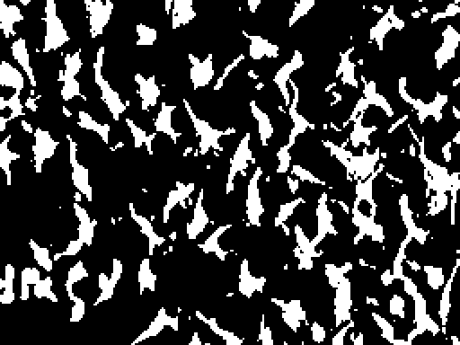 | |||
bickleyx_image2D(cell) → mask | bickleyy_image2D(cell) → mask | bickleym_image2D(cell) → mask | prewittx_image2D(cell) → mask | prewitty_image2D(cell) → mask | prewittm_image2D(cell) → mask |
scharrx_image2D(cell) → mask | scharry_image2D(cell) → mask | scharrm_image2D(cell) → mask | gaussian5_image2D(cell) → mask | gaussian9_image2D(cell) → mask | gaussian13_image2D(cell) → mask |
gaussian17_image2D(cell) → mask | gaussian25_image2D(cell) → mask | laplacian3_image2D(cell) → mask | dog_image2D(cell, 1, 1) → mask | moffat5_image2D(cell, 2, 1.5) → mask | moffat13_image2D(cell, 3, 1.5) → mask |
moffat25_image2D(cell, 4, 1.5) → mask | findlocalmaxima_image2D(cell, 5, 5) | findlocalminima_image2D(cell, 5, 5) | |||
Morphology
The parameter k is the size of the diamond-shaped structuring element: rounded, made odd and clamped to 3 … 13 (default 3). morphogradient_2D takes a third input, the mode: < 0 Beucher (dilation − erosion), 0 internal (image − erosion), > 0 external (dilation − image).
mI, mB = :bundle_image2DIntensity_morph_factory, :bundle_image2DBinary_morph_factory
ops = (:erosion_2D, :dilation_2D, :opening_2D, :closing_2D, :tophat_2D, :bothat_2D, :morphogradient_2D, :morpholaplace_2D)
g_gallery(page, entries("morph", vcat(
[(mI, n, I, (cell, 5.0), "`$(n)(cell, 5)`") for n in ops],
[(mB, n, B, (mask, 5.0), "`$(n)(mask, 5)`") for n in ops],
)))erosion_2D(cell, 5) | dilation_2D(cell, 5) | opening_2D(cell, 5) | closing_2D(cell, 5) |
|---|---|---|---|
tophat_2D(cell, 5) | bothat_2D(cell, 5) | morphogradient_2D(cell, 5) | morpholaplace_2D(cell, 5) |
erosion_2D(mask, 5) | dilation_2D(mask, 5) | opening_2D(mask, 5) | closing_2D(mask, 5) |
tophat_2D(mask, 5) | bothat_2D(mask, 5) | morphogradient_2D(mask, 5) | morpholaplace_2D(mask, 5) |
Effect of k on erosion_2D(mask, k):
g_gallery(page, entries("morphk", [(mB, :erosion_2D, B, (mask, k), "`k = $(Int(k))`") for k in (3.0, 7.0, 13.0)]); cols = 3)k = 3 | k = 7 | k = 13 |
|---|---|---|
Thresholding
Every method on cell with its defaults. Histogram methods (otsu, yen, …) take an optional number of histogram bins (30 … 500, default 256); local methods take a window size and a bias (adaptive, niblack, sauvola); binarize_manual2D(img, t) thresholds at t (a float in [0, 1], or an integer on the 0 … 255 scale), and binarize_manual2D(img, other) at the mean of another image. Manual thresholding uses ≥: even a constant image can give a full mask when its value reaches the threshold. A constant image has no intensity variation for histogram methods to separate; local methods follow their own comparison rules.
The methods disagree a lot on a dim image like this one (median 0.016): unimodalrosin keeps 93% of the pixels, otsu 11%, balanced none. Balanced histogram thresholding assumes two comparable peaks and fails on such a skewed histogram, and binarize_manual2D(cell) thresholds at 0.5, above almost every pixel.
g_gallery(page, entries("thresh", [(:bundle_image2DBinary_binarize_factory, w.name, B, (cell,), "`$(w.name)(cell)`")
for w in bundle_image2DBinary_binarize_factory]); cols = 5)binarize_adaptive2D(cell) | binarize_niblack2D(cell) | binarize_polysegment2D(cell) | binarize_sauvola2D(cell) | binarize_otsu2D(cell) |
|---|---|---|---|---|
 | ||||
binarize_minimumintermodes2D(cell) | binarize_intermodes2D(cell) | binarize_minimumerror2D(cell) | binarize_moments2D(cell) | binarize_unimodalrosin2D(cell) |
 | ||||
binarize_entropy2D(cell) | binarize_balanced2D(cell) | binarize_yen2D(cell) | binarize_manual2D(cell) | |
Manual thresholding on two constant images, using the same default 0.5:
flat_dark = g_name!(g_intensity(fill(0.4, size(cell)...)), "flat 0.4")
flat_bright = g_name!(g_intensity(fill(0.8, size(cell)...)), "flat 0.8")
manual = fn(:bundle_image2DBinary_binarize_factory, :binarize_manual2D, B)
dark_mask = g_call(manual, flat_dark)
bright_mask = g_call(manual, flat_bright)
g_gallery(page, [
("flat_dark.png", "constant `0.4`", flat_dark),
("flat_dark_manual.png", "manual threshold: empty", dark_mask),
("flat_bright.png", "constant `0.8`", flat_bright),
("flat_bright_manual.png", "manual threshold: full", bright_mask),
])constant 0.4 | manual threshold: empty | constant 0.8 | manual threshold: full |
|---|---|---|---|
 |  |
Segmentation
fastscanning_image2D(img, t) groups neighbouring pixels whose intensities differ by less than t (default 0.1): a smaller t gives more regions.
watershed_image2D(mask, [restrict], [h]) gives each object of a mask its own label and cuts touching objects at their narrowest part. The depth of an object pixel is its distance to the background; each object is seeded where its depth is at least h times its own maximum (default h = 0.7) and flooded from there. h = 0 keeps every connected object whole; a higher h splits more. Background stays 0.
seg = :bundle_image2DSegment_segmentation_factory
disks = g_binary([((r - 20)^2 + (c - 14)^2 <= 81) || ((r - 20)^2 + (c - 28)^2 <= 81) for r in 1:40, c in 1:44])
SD = typeof(g_segment(zeros(Int, 40, 44)))
g_gallery(page, vcat(entries("seg", [
(seg, :fastscanning_image2D, S, (cell, 0.05), "`fastscanning_image2D(cell, 0.05)`"),
(seg, :fastscanning_image2D, S, (cell, 0.1), "`fastscanning_image2D(cell, 0.1)`"),
(seg, :fastscanning_image2D, S, (cell, 0.2), "`fastscanning_image2D(cell, 0.2)`"),
(seg, :watershed_image2D, S, (mask,), "`watershed_image2D(mask)`"),
]), [("seg_disks.png", "`disks`: two touching disks", disks)], entries("segd", [
(seg, :watershed_image2D, SD, (disks, 0.0), "`watershed_image2D(disks, 0)`: one object"),
(seg, :watershed_image2D, SD, (disks, 0.5), "`watershed_image2D(disks, 0.5)`: neck (≈ 0.62) not cut"),
(seg, :watershed_image2D, SD, (disks, 0.7), "`watershed_image2D(disks, 0.7)`: cut in two"),
])))fastscanning_image2D(cell, 0.05) | fastscanning_image2D(cell, 0.1) | fastscanning_image2D(cell, 0.2) | watershed_image2D(mask) |
|---|---|---|---|
disks: two touching disks | watershed_image2D(disks, 0): one object | watershed_image2D(disks, 0.5): neck (≈ 0.62) not cut | watershed_image2D(disks, 0.7): cut in two |
 |  |
Internal pooling helpers
Pooling operators share these selection and counting routines. They may reorder their working vectors; pass scratch storage rather than a view into an input image when the input must remain unchanged. Their docstrings describe the selection rank, tie handling and pixel conversion used by the public operators.
MAGE.image_pooling_common — Module
Helpers shared by block pooling (image_pool.jl) and sliding-window pooling (image_pooler.jl).
Call tree (from a pooling function):
pixel_values!(values, pixels) pixels → plain array of their values (image_buffers.jl)
mode!(buffer) most frequent value, in place
unique_count!(buffer) number of distinct values, in place
├── _value_counts!(buffer, …) counts per integer value, when the range is small
└── sort!(buffer; alg = QuickSort) otherwise
median_select!(buffer) median
└── kth_smallest!(buffer, k) k-th smallest: counts, byte radix select, or _select!
pooled_pixel(P, x) a pooled number → a pixel of type PNone of them allocates: sort!'s default algorithms (radix and counting sorts) and median! / partialsort! allocate workspace on every call, so they are replaced by in-place algorithms giving the same results.
MAGE.image_pooling_common.unique_count! — Function
unique_count!(buffer) -> number of distinct valuesbuffer may be reordered; nothing is allocated. Counted in a table for integer values over a small range, otherwise by sorting and counting where neighbours differ. Example: [9, 3, 3] → 2.
MAGE.image_pooling_common.median_select! — Function
median_select!(buffer) -> median, exactly as `Statistics.median!(buffer)`The middle value (odd length) or middle of the two middle values (even length), without median!'s allocating partial sort. NaN anywhere gives NaN, as median!. buffer may be reordered.
Example: [5, 1, 4, 2] → middle values 2 and 4 → 3.0.
MAGE.image_pooling_common.pooled_pixel — Function
pooled_pixel(P, x) -> PTurn a pooled number x back into a pixel of type P, as the pooling functions always did:
- masks (
BinaryPixel): set whenx ≥ 0.5(a majority); - labels (
SegmentPixel{T}):xrounded to the nearest label (labels pass through Float64, so labels beyond2^53lose precision, as before); - intensities (
IntensityPixel{T}):xconverted to the storage typeT.
Example: pooled_pixel(BinaryPixel{Bool}, 0.75) == BinaryPixel(true), pooled_pixel(SegmentPixel{Int}, 2.0) == SegmentPixel(2).
MAGE.image_pooling_common.kth_smallest! — Function
kth_smallest!(buffer, k) -> the k-th smallest valueExact, allocation-free, choosing the fastest method for the values:
- integer keys over a small range (labels): walk the counts table;
- 16-bit fixed-point values (
N0f16): radix select on the two bytes of the raw value (_kth_by_bytes); - anything else: quickselect (
_select!, reordersbuffer).
Example: kth_smallest!([7, 2, 9, 4], 2) == 4.
MAGE.image_pooling_common.mode! — Function
mode!(buffer) -> most frequent value (ties: the smallest)The "average" of a label map: unlike the mean of label numbers, it never invents a label. buffer may be reordered; nothing is allocated.
How: integer values over a small range are counted in a table and the first largest count wins (the smallest value on ties). Otherwise buffer is sorted, so equal values are next to each other, and one pass measures each run; a run replaces the best only when strictly longer, so on ties the first run, which holds the smallest value, wins.
Example: [3, 1, 3, 1, 2] → counts 1×2, 2×1, 3×2 → 1 (tied with 3, smaller).
Timings for the examples
Measured during this documentation build. See Timing methodology for measurement limits and input cases that can make operators expensive.
Julia 1.13.2; znver5; 1 Julia thread(s); optimisation level 2.
Times are warmed wall-clock measurements of the actual calls above, including invokelatest and allocations. Loading, factory generation and image rendering are excluded. CPU load and garbage collection affect these values. The maximum is the slowest observed sample, not a worst-case bound.
| Input | Dimensions | Pixel storage |
|---|---|---|
| cell #1 | 192×256 | IntensityPixel{FixedPointNumbers.N0f8} |
| shifted cell #2 | 192×256 | IntensityPixel{FixedPointNumbers.N0f8} |
| Otsu mask #3 | 192×256 | BinaryPixel{Bool} |
| image #4 | 192×256 | SegmentPixel{Int64} |
| image #5 | 192×256 | SegmentPixel{Int64} |
| image #6 | 192×256 | SegmentPixel{Int64} |
| shifted Otsu mask #7 | 192×256 | BinaryPixel{Bool} |
| flat 0.4 #8 | 192×256 | IntensityPixel{FixedPointNumbers.N0f8} |
| flat 0.8 #9 | 192×256 | IntensityPixel{FixedPointNumbers.N0f8} |
| image #10 | 40×44 | BinaryPixel{Bool} |
Numeric-only plot calls of the same operator and arity are grouped: argument ranges cover the sampled values, the median is the median of the per-case medians, and the maximum covers every observed sample. Image calls keep a row for each input/parameter combination.
| Operator | Inputs | Output | Median (µs) | Observed max (µs) | Allocated bytes (median) | Cases / samples |
|---|---|---|---|---|---|---|
binarize_otsu2D | cell #1 | 192×256, BinaryPixel{Bool} | 40.36 | 68.61 | 64224 | 1 / 3 |
binarize_otsu2D | image #2 | 192×256, BinaryPixel{Bool} | 42.36 | 57.14 | 64224 | 1 / 3 |
identity_image2D | cell #1 | 192×256, IntensityPixel{FixedPointNumbers.N0f8} | 0.14 | 2.68 | 0 | 1 / 3 |
ones_2D | cell #1 | 192×256, IntensityPixel{FixedPointNumbers.N0f8} | 3.87 | 9.39 | 98448 | 1 / 3 |
zeros_2D | cell #1 | 192×256, IntensityPixel{FixedPointNumbers.N0f8} | 3.4 | 7.58 | 98448 | 1 / 3 |
experimental_invert_image2D | cell #1 | 192×256, IntensityPixel{FixedPointNumbers.N0f8} | 32.13 | 43.71 | 49256 | 1 / 3 |
experimental_normalize_image2D | cell #1 | 192×256, IntensityPixel{FixedPointNumbers.N0f8} | 86.5 | 94.47 | 49464 | 1 / 3 |
experimental_standardize_image2D | cell #1 | 192×256, IntensityPixel{FixedPointNumbers.N0f8} | 65.63 | 84.45 | 49464 | 1 / 3 |
experimental_tointensity_image2D | Otsu mask #3 | 192×256, IntensityPixel{FixedPointNumbers.N0f8} | 3.16 | 8.18 | 49256 | 1 / 3 |
experimental_tobinary_image2D | cell #1 | 192×256, BinaryPixel{Bool} | 23.12 | 29.24 | 49256 | 1 / 3 |
experimental_tobinary_th_image2D | cell #1; 0.2 | 192×256, BinaryPixel{Bool} | 23.54 | 30.42 | 49320 | 1 / 3 |
identity_image2D | Otsu mask #3 | 192×256, BinaryPixel{Bool} | 0.37 | 3.34 | 48 | 1 / 3 |
ones_2D | Otsu mask #3 | 192×256, BinaryPixel{Bool} | 4.38 | 10.65 | 98496 | 1 / 3 |
zeros_2D | Otsu mask #3 | 192×256, BinaryPixel{Bool} | 3.86 | 10.65 | 98496 | 1 / 3 |
identity_image2D | image #4 | 192×256, SegmentPixel{Int64} | 0.36 | 3.19 | 48 | 1 / 3 |
ones_2D | image #5 | 192×256, SegmentPixel{Int64} | 29.03 | 35.99 | 786624 | 1 / 3 |
zeros_2D | image #6 | 192×256, SegmentPixel{Int64} | 19.99 | 24.04 | 786624 | 1 / 3 |
experimental_invert_image2D | Otsu mask #3 | 192×256, BinaryPixel{Bool} | 50.03 | 78.1 | 49304 | 1 / 3 |
experimental_tosegment_image2D | Otsu mask #3 | 192×256, SegmentPixel{Int64} | 13.82 | 25.91 | 393368 | 1 / 3 |
add_image2D | cell #1; shifted cell #2 | 192×256, IntensityPixel{FixedPointNumbers.N0f8} | 125.26 | 148.28 | 688648 | 1 / 3 |
subtract_image2D | cell #1; shifted cell #2 | 192×256, IntensityPixel{FixedPointNumbers.N0f8} | 135.01 | 150.76 | 688648 | 1 / 3 |
mult_image2D | cell #1; shifted cell #2 | 192×256, IntensityPixel{FixedPointNumbers.N0f8} | 123.61 | 134.03 | 688648 | 1 / 3 |
max_image2D | cell #1; shifted cell #2 | 192×256, IntensityPixel{FixedPointNumbers.N0f8} | 123.82 | 136.28 | 688648 | 1 / 3 |
min_image2D | cell #1; shifted cell #2 | 192×256, IntensityPixel{FixedPointNumbers.N0f8} | 146.58 | 162.22 | 688648 | 1 / 3 |
add_image2D | Otsu mask #3; shifted Otsu mask #7 | 192×256, BinaryPixel{Bool} | 228.64 | 240.61 | 1628800 | 1 / 3 |
subtract_image2D | Otsu mask #3; shifted Otsu mask #7 | 192×256, BinaryPixel{Bool} | 207.91 | 243.42 | 1628800 | 1 / 3 |
mult_image2D | Otsu mask #3; shifted Otsu mask #7 | 192×256, BinaryPixel{Bool} | 210.13 | 212.38 | 1628800 | 1 / 3 |
max_image2D | Otsu mask #3; shifted Otsu mask #7 | 192×256, BinaryPixel{Bool} | 169470.17 | 338670.96 | 1628800 | 1 / 2 |
min_image2D | Otsu mask #3; shifted Otsu mask #7 | 192×256, BinaryPixel{Bool} | 208.52 | 232.74 | 1628800 | 1 / 3 |
badd_image2D | cell #1; 0.3 | 192×256, IntensityPixel{FixedPointNumbers.N0f8} | 88.55 | 95.3 | 688560 | 1 / 3 |
bsubtract_image2D | cell #1; 0.1 | 192×256, IntensityPixel{FixedPointNumbers.N0f8} | 85.95 | 94.09 | 688560 | 1 / 3 |
bmult_image2D | cell #1; 3.0 | 192×256, IntensityPixel{FixedPointNumbers.N0f8} | 123.78 | 182.32 | 688560 | 1 / 3 |
exp_image2D | cell #1 | 192×256, IntensityPixel{FixedPointNumbers.N0f8} | 322.59 | 356.35 | 49640 | 1 / 3 |
log_image2D | cell #1 | 192×256, IntensityPixel{FixedPointNumbers.N0f8} | 851.36 | 872.53 | 49640 | 1 / 3 |
loginv_image2D | cell #1 | 192×256, IntensityPixel{FixedPointNumbers.N0f8} | 365.29 | 371.1 | 688544 | 1 / 3 |
powerof_image2D | cell #1; 0.5 | 192×256, IntensityPixel{FixedPointNumbers.N0f8} | 1040.62 | 1052.98 | 246016 | 1 / 3 |
powerof_image2D | cell #1; 2.0 | 192×256, IntensityPixel{FixedPointNumbers.N0f8} | 235.2 | 245.48 | 246016 | 1 / 3 |
sobelx_image2D | cell #1 | 192×256, IntensityPixel{FixedPointNumbers.N0f8} | 381.1 | 407.24 | 470704 | 1 / 3 |
sobely_image2D | cell #1 | 192×256, IntensityPixel{FixedPointNumbers.N0f8} | 364.48 | 438.94 | 470704 | 1 / 3 |
sobelm_image2D | cell #1 | 192×256, IntensityPixel{FixedPointNumbers.N0f8} | 655.55 | 737.01 | 892104 | 1 / 3 |
ando3x_image2D | cell #1 | 192×256, IntensityPixel{FixedPointNumbers.N0f8} | 377.67 | 476.53 | 470704 | 1 / 3 |
ando3y_image2D | cell #1 | 192×256, IntensityPixel{FixedPointNumbers.N0f8} | 380.89 | 523.34 | 470704 | 1 / 3 |
ando3m_image2D | cell #1 | 192×256, IntensityPixel{FixedPointNumbers.N0f8} | 671.25 | 705.87 | 892104 | 1 / 3 |
ando4x_image2D | cell #1 | 192×256, IntensityPixel{FixedPointNumbers.N0f8} | 383.24 | 453.6 | 460992 | 1 / 3 |
ando4y_image2D | cell #1 | 192×256, IntensityPixel{FixedPointNumbers.N0f8} | 381.9 | 446.28 | 460992 | 1 / 3 |
ando4m_image2D | cell #1 | 192×256, IntensityPixel{FixedPointNumbers.N0f8} | 673.1 | 691.08 | 872680 | 1 / 3 |
ando5x_image2D | cell #1 | 192×256, IntensityPixel{FixedPointNumbers.N0f8} | 494.91 | 570.87 | 465424 | 1 / 3 |
ando5y_image2D | cell #1 | 192×256, IntensityPixel{FixedPointNumbers.N0f8} | 508.56 | 539.12 | 465424 | 1 / 3 |
ando5m_image2D | cell #1 | 192×256, IntensityPixel{FixedPointNumbers.N0f8} | 919.82 | 965.84 | 881544 | 1 / 3 |
bickleyx_image2D | cell #1 | 192×256, IntensityPixel{FixedPointNumbers.N0f8} | 384.67 | 426.34 | 470704 | 1 / 3 |
bickleyy_image2D | cell #1 | 192×256, IntensityPixel{FixedPointNumbers.N0f8} | 379.29 | 432.38 | 470704 | 1 / 3 |
bickleym_image2D | cell #1 | 192×256, IntensityPixel{FixedPointNumbers.N0f8} | 656.47 | 707.39 | 892104 | 1 / 3 |
prewittx_image2D | cell #1 | 192×256, IntensityPixel{FixedPointNumbers.N0f8} | 363.19 | 408.41 | 470704 | 1 / 3 |
prewitty_image2D | cell #1 | 192×256, IntensityPixel{FixedPointNumbers.N0f8} | 414.91 | 460.0 | 470704 | 1 / 3 |
prewittm_image2D | cell #1 | 192×256, IntensityPixel{FixedPointNumbers.N0f8} | 659.71 | 770.18 | 892104 | 1 / 3 |
scharrx_image2D | cell #1 | 192×256, IntensityPixel{FixedPointNumbers.N0f8} | 369.75 | 461.65 | 470704 | 1 / 3 |
scharry_image2D | cell #1 | 192×256, IntensityPixel{FixedPointNumbers.N0f8} | 387.92 | 422.04 | 470704 | 1 / 3 |
scharrm_image2D | cell #1 | 192×256, IntensityPixel{FixedPointNumbers.N0f8} | 666.16 | 689.46 | 892104 | 1 / 3 |
gaussian5_image2D | cell #1 | 192×256, IntensityPixel{FixedPointNumbers.N0f8} | 572.7 | 38465.54 | 483624 | 1 / 3 |
gaussian9_image2D | cell #1 | 192×256, IntensityPixel{FixedPointNumbers.N0f8} | 712.38 | 802.4 | 495864 | 1 / 3 |
gaussian13_image2D | cell #1 | 192×256, IntensityPixel{FixedPointNumbers.N0f8} | 926.8 | 1074.5 | 521496 | 1 / 3 |
gaussian17_image2D | cell #1 | 192×256, IntensityPixel{FixedPointNumbers.N0f8} | 1281.85 | 1363.61 | 539112 | 1 / 3 |
gaussian25_image2D | cell #1 | 192×256, IntensityPixel{FixedPointNumbers.N0f8} | 2045.59 | 2100.14 | 599208 | 1 / 3 |
laplacian3_image2D | cell #1 | 192×256, IntensityPixel{FixedPointNumbers.N0f8} | 290.26 | 333.82 | 456424 | 1 / 3 |
dog_image2D | cell #1; 1.0; 1.0 | 192×256, IntensityPixel{FixedPointNumbers.N0f8} | 907.17 | 1039.81 | 4571664 | 1 / 3 |
dog_image2D | cell #1; 3.0; 3.0 | 192×256, IntensityPixel{FixedPointNumbers.N0f8} | 960.26 | 1022.02 | 4606872 | 1 / 3 |
moffat5_image2D | cell #1; 2.0; 1.5 | 192×256, IntensityPixel{FixedPointNumbers.N0f8} | 486.64 | 525.37 | 466000 | 1 / 3 |
moffat13_image2D | cell #1; 3.0; 1.5 | 192×256, IntensityPixel{FixedPointNumbers.N0f8} | 1015.03 | 1030.85 | 4577328 | 1 / 3 |
moffat25_image2D | cell #1; 4.0; 1.5 | 192×256, IntensityPixel{FixedPointNumbers.N0f8} | 1307.13 | 1463.96 | 5161464 | 1 / 3 |
sobelx_image2D | cell #1 | 192×256, BinaryPixel{Bool} | 315.16 | 383.75 | 470704 | 1 / 3 |
sobely_image2D | cell #1 | 192×256, BinaryPixel{Bool} | 321.03 | 342.84 | 470704 | 1 / 3 |
sobelm_image2D | cell #1 | 192×256, BinaryPixel{Bool} | 605.1 | 690.0 | 892104 | 1 / 3 |
ando3x_image2D | cell #1 | 192×256, BinaryPixel{Bool} | 324.34 | 361.16 | 470704 | 1 / 3 |
ando3y_image2D | cell #1 | 192×256, BinaryPixel{Bool} | 308.35 | 369.78 | 470704 | 1 / 3 |
ando3m_image2D | cell #1 | 192×256, BinaryPixel{Bool} | 601.1 | 663.76 | 892104 | 1 / 3 |
ando4x_image2D | cell #1 | 192×256, BinaryPixel{Bool} | 326.95 | 349.53 | 460992 | 1 / 3 |
ando4y_image2D | cell #1 | 192×256, BinaryPixel{Bool} | 324.93 | 343.08 | 460992 | 1 / 3 |
ando4m_image2D | cell #1 | 192×256, BinaryPixel{Bool} | 611.92 | 650.66 | 872680 | 1 / 3 |
ando5x_image2D | cell #1 | 192×256, BinaryPixel{Bool} | 429.13 | 455.31 | 465424 | 1 / 3 |
ando5y_image2D | cell #1 | 192×256, BinaryPixel{Bool} | 429.14 | 471.55 | 465424 | 1 / 3 |
ando5m_image2D | cell #1 | 192×256, BinaryPixel{Bool} | 838.26 | 860.25 | 881544 | 1 / 3 |
bickleyx_image2D | cell #1 | 192×256, BinaryPixel{Bool} | 320.17 | 350.58 | 470704 | 1 / 3 |
bickleyy_image2D | cell #1 | 192×256, BinaryPixel{Bool} | 341.69 | 358.59 | 470704 | 1 / 3 |
bickleym_image2D | cell #1 | 192×256, BinaryPixel{Bool} | 612.12 | 637.96 | 892104 | 1 / 3 |
prewittx_image2D | cell #1 | 192×256, BinaryPixel{Bool} | 331.52 | 415.57 | 470704 | 1 / 3 |
prewitty_image2D | cell #1 | 192×256, BinaryPixel{Bool} | 312.19 | 364.75 | 470704 | 1 / 3 |
prewittm_image2D | cell #1 | 192×256, BinaryPixel{Bool} | 611.06 | 630.11 | 892104 | 1 / 3 |
scharrx_image2D | cell #1 | 192×256, BinaryPixel{Bool} | 307.34 | 368.09 | 470704 | 1 / 3 |
scharry_image2D | cell #1 | 192×256, BinaryPixel{Bool} | 311.85 | 344.61 | 470704 | 1 / 3 |
scharrm_image2D | cell #1 | 192×256, BinaryPixel{Bool} | 614.48 | 638.1 | 892104 | 1 / 3 |
gaussian5_image2D | cell #1 | 192×256, BinaryPixel{Bool} | 431.19 | 477.86 | 483624 | 1 / 3 |
gaussian9_image2D | cell #1 | 192×256, BinaryPixel{Bool} | 649.37 | 671.44 | 495864 | 1 / 3 |
gaussian13_image2D | cell #1 | 192×256, BinaryPixel{Bool} | 924.58 | 27389.92 | 521496 | 1 / 3 |
gaussian17_image2D | cell #1 | 192×256, BinaryPixel{Bool} | 1203.58 | 1257.64 | 539112 | 1 / 3 |
gaussian25_image2D | cell #1 | 192×256, BinaryPixel{Bool} | 2022.08 | 2071.27 | 599208 | 1 / 3 |
laplacian3_image2D | cell #1 | 192×256, BinaryPixel{Bool} | 251.51 | 320.46 | 456424 | 1 / 3 |
dog_image2D | cell #1; 1.0; 1.0 | 192×256, BinaryPixel{Bool} | 961.25 | 1039.68 | 4571664 | 1 / 3 |
moffat5_image2D | cell #1; 2.0; 1.5 | 192×256, BinaryPixel{Bool} | 438.12 | 486.78 | 466000 | 1 / 3 |
moffat13_image2D | cell #1; 3.0; 1.5 | 192×256, BinaryPixel{Bool} | 859.62 | 935.18 | 4577328 | 1 / 3 |
moffat25_image2D | cell #1; 4.0; 1.5 | 192×256, BinaryPixel{Bool} | 1366.48 | 19560.93 | 5161464 | 1 / 3 |
findlocalmaxima_image2D | cell #1; 5.0; 5.0 | 192×256, BinaryPixel{Bool} | 281.96 | 307.76 | 110272 | 1 / 3 |
findlocalminima_image2D | cell #1; 5.0; 5.0 | 192×256, BinaryPixel{Bool} | 253.76 | 282.51 | 101656 | 1 / 3 |
erosion_2D | cell #1; 5.0 | 192×256, IntensityPixel{FixedPointNumbers.N0f8} | 79.14 | 102.96 | 165024 | 1 / 3 |
dilation_2D | cell #1; 5.0 | 192×256, IntensityPixel{FixedPointNumbers.N0f8} | 131.6 | 135.94 | 165024 | 1 / 3 |
opening_2D | cell #1; 5.0 | 192×256, IntensityPixel{FixedPointNumbers.N0f8} | 108.96 | 122.22 | 215128 | 1 / 3 |
closing_2D | cell #1; 5.0 | 192×256, IntensityPixel{FixedPointNumbers.N0f8} | 85.22 | 99.4 | 215128 | 1 / 3 |
tophat_2D | cell #1; 5.0 | 192×256, IntensityPixel{FixedPointNumbers.N0f8} | 147.59 | 158.76 | 364328 | 1 / 3 |
bothat_2D | cell #1; 5.0 | 192×256, IntensityPixel{FixedPointNumbers.N0f8} | 171.36 | 196.82 | 364328 | 1 / 3 |
morphogradient_2D | cell #1; 5.0 | 192×256, IntensityPixel{FixedPointNumbers.N0f8} | 111.12 | 119.77 | 448248 | 1 / 3 |
morpholaplace_2D | cell #1; 5.0 | 192×256, IntensityPixel{FixedPointNumbers.N0f8} | 240.3 | 274.14 | 448248 | 1 / 3 |
erosion_2D | Otsu mask #3; 5.0 | 192×256, BinaryPixel{Bool} | 288.74 | 292.55 | 130192 | 1 / 3 |
dilation_2D | Otsu mask #3; 5.0 | 192×256, BinaryPixel{Bool} | 286.88 | 300.98 | 130192 | 1 / 3 |
opening_2D | Otsu mask #3; 5.0 | 192×256, BinaryPixel{Bool} | 563.14 | 580.02 | 210584 | 1 / 3 |
closing_2D | Otsu mask #3; 5.0 | 192×256, BinaryPixel{Bool} | 560.32 | 586.15 | 210584 | 1 / 3 |
tophat_2D | Otsu mask #3; 5.0 | 192×256, BinaryPixel{Bool} | 401.34 | 409.13 | 329416 | 1 / 3 |
bothat_2D | Otsu mask #3; 5.0 | 192×256, BinaryPixel{Bool} | 386.46 | 426.99 | 329416 | 1 / 3 |
morphogradient_2D | Otsu mask #3; 5.0 | 192×256, BinaryPixel{Bool} | 150.13 | 179.07 | 448280 | 1 / 3 |
morpholaplace_2D | Otsu mask #3; 5.0 | 192×256, BinaryPixel{Bool} | 298.38 | 339.95 | 448280 | 1 / 3 |
erosion_2D | Otsu mask #3; 3.0 | 192×256, BinaryPixel{Bool} | 25.37 | 29.52 | 99512 | 1 / 3 |
erosion_2D | Otsu mask #3; 7.0 | 192×256, BinaryPixel{Bool} | 431.73 | 437.14 | 166864 | 1 / 3 |
erosion_2D | Otsu mask #3; 13.0 | 192×256, BinaryPixel{Bool} | 835.25 | 839.0 | 276880 | 1 / 3 |
binarize_adaptive2D | cell #1 | 192×256, BinaryPixel{Bool} | 2152.93 | 3042.78 | 6734288 | 1 / 3 |
binarize_niblack2D | cell #1 | 192×256, BinaryPixel{Bool} | 617.52 | 636.97 | 639488 | 1 / 3 |
binarize_polysegment2D | cell #1 | 192×256, BinaryPixel{Bool} | 883.44 | 927.73 | 4182928 | 1 / 3 |
binarize_sauvola2D | cell #1 | 192×256, BinaryPixel{Bool} | 737.99 | 744.54 | 639488 | 1 / 3 |
binarize_minimumintermodes2D | cell #1 | 192×256, BinaryPixel{Bool} | 46.12 | 82.82 | 58352 | 1 / 3 |
binarize_intermodes2D | cell #1 | 192×256, BinaryPixel{Bool} | 45.84 | 64.43 | 58352 | 1 / 3 |
binarize_minimumerror2D | cell #1 | 192×256, BinaryPixel{Bool} | 49.44 | 66.33 | 76992 | 1 / 3 |
binarize_moments2D | cell #1 | 192×256, BinaryPixel{Bool} | 40.28 | 64.45 | 57760 | 1 / 3 |
binarize_unimodalrosin2D | cell #1 | 192×256, BinaryPixel{Bool} | 39.11 | 53.31 | 55792 | 1 / 3 |
binarize_entropy2D | cell #1 | 192×256, BinaryPixel{Bool} | 44.75 | 85.02 | 62328 | 1 / 3 |
binarize_balanced2D | cell #1 | 192×256, BinaryPixel{Bool} | 44.58 | 66.34 | 55968 | 1 / 3 |
binarize_yen2D | cell #1 | 192×256, BinaryPixel{Bool} | 54.54 | 60.61 | 62120 | 1 / 3 |
binarize_manual2D | cell #1 | 192×256, BinaryPixel{Bool} | 3.28 | 26.38 | 49304 | 1 / 3 |
binarize_manual2D | flat 0.4 #8 | 192×256, BinaryPixel{Bool} | 3.01 | 3.22 | 49304 | 1 / 3 |
binarize_manual2D | flat 0.8 #9 | 192×256, BinaryPixel{Bool} | 2.92 | 3.04 | 49304 | 1 / 3 |
fastscanning_image2D | cell #1; 0.05 | 192×256, SegmentPixel{Int64} | 1606.32 | 1658.98 | 640016 | 1 / 3 |
fastscanning_image2D | cell #1; 0.1 | 192×256, SegmentPixel{Int64} | 1478.89 | 1488.96 | 508112 | 1 / 3 |
fastscanning_image2D | cell #1; 0.2 | 192×256, SegmentPixel{Int64} | 1405.49 | 1408.71 | 459904 | 1 / 3 |
watershed_image2D | Otsu mask #3 | 192×256, SegmentPixel{Int64} | 379.54 | 501.37 | 512128 | 1 / 3 |
watershed_image2D | image #10; 0.0 | 40×44, SegmentPixel{Int64} | 72.81 | 156.91 | 72664 | 1 / 3 |
watershed_image2D | image #10; 0.5 | 40×44, SegmentPixel{Int64} | 78.24 | 90.48 | 72632 | 1 / 3 |
watershed_image2D | image #10; 0.7 | 40×44, SegmentPixel{Int64} | 78.94 | 87.8 | 72632 | 1 / 3 |